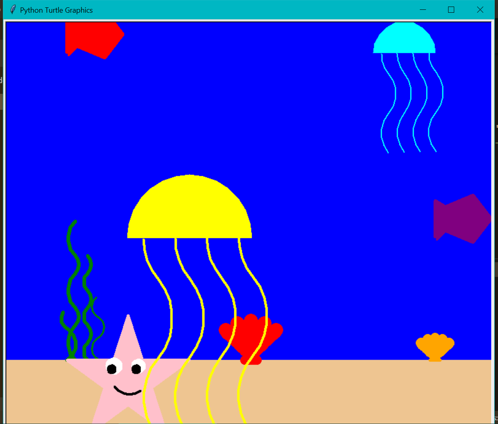
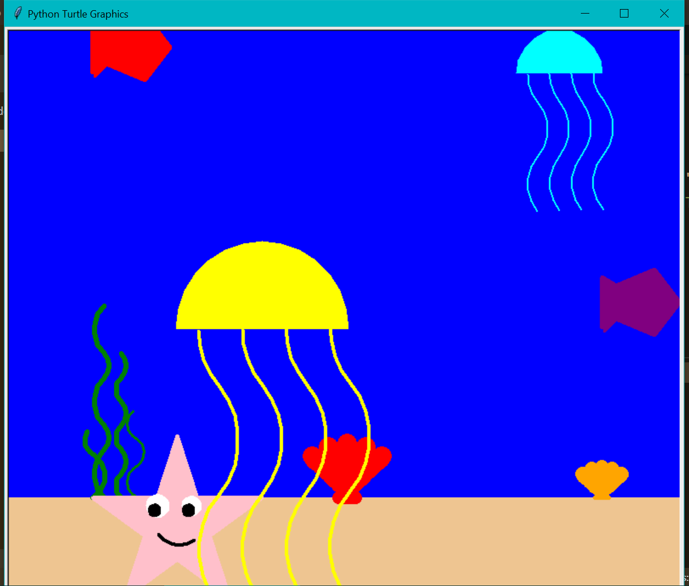

This is my portfolio page!
Draw it Yourself
This project guides the user through a series of steps to draw their own image with an under the sea theme. The program asks the user specific questions pertaining to object and the program responds based on their answer. After the user selects an object to draw, the following questions would be more detailed, gathering information about the user’s preference of color, size, position of that specific object. This process repeats for every object in the program until the user responds no to the question "would you like to draw?"
 
